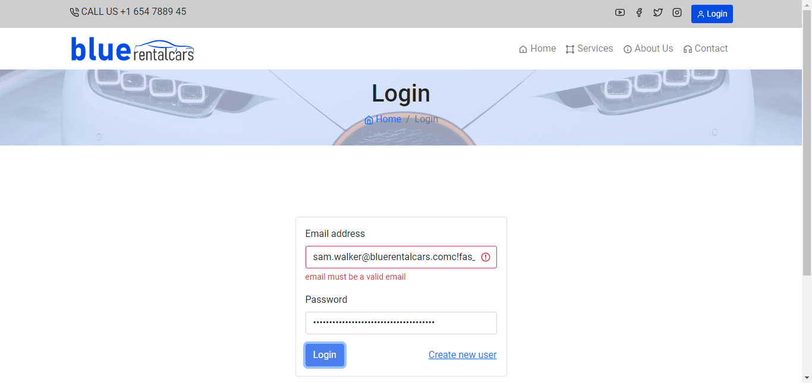

Started
Nov 1, 2023 04:23:59 AM
Ended
Nov 1, 2023 04:24:13 AM
Features Passed
0
Features Failed
1
Features
Scenarios
Steps
Timeline
Tags
| Name | Passed | Failed | Skipped | Others | Passed % |
|---|---|---|---|---|---|
| @manager_login_test | 0 | 4 | 0 | 0 | 0% |
System/Environment
| Name | Value |
|---|---|
| os | Windows |
-
manager_login_test
4:24:00 AM / 00:00:13:230 Fail
manager_login_test
11.01.2023 4:24:00 AM 11.01.2023 4:24:13 AM 00:00:13:230 · #test-id=1Failuser should be able to login with manager credentialsFailuser should be able to login with manager credentialsGiven user is on "https://www.bluerentalcars.com/"When user navigates to the login pageAnd enter "sam.walker@bluerentalcars.com"And enter "c!fas_art"And click on login buttonThen verify the login is successfulhooks.Hooks.afterTearDown(io.cucumber.java.Scenario)failed_screenshotFailuser should be able to login with manager credentialsGiven user is on "https://www.bluerentalcars.com/"When user navigates to the login pageAnd enter "kate.brown@bluerentalcars.com"Step skippedAnd enter "tad1$Fas"Step skippedAnd click on login buttonStep skippedThen verify the login is successfulStep skippedhooks.Hooks.afterTearDown(io.cucumber.java.Scenario)Failuser should be able to login with manager credentialsGiven user is on "https://www.bluerentalcars.com/"When user navigates to the login pageStep skippedAnd enter "raj.khan@bluerentalcars.com"Step skippedAnd enter "v7Hg_va^"Step skippedAnd click on login buttonStep skippedThen verify the login is successfulStep skippedhooks.Hooks.afterTearDown(io.cucumber.java.Scenario)Failuser should be able to login with manager credentialsGiven user is on "https://www.bluerentalcars.com/"When user navigates to the login pageStep skippedAnd enter "pam.raymond@bluerentalcars.com"Step skippedAnd enter "Nga^g6!"Step skippedAnd click on login buttonStep skippedThen verify the login is successfulStep skippedhooks.Hooks.afterTearDown(io.cucumber.java.Scenario)
-
@manager_login_test
4 tests
@manager_login_test
4 failedStatus Timestamp TestName Fail 04:24:00 AM user should be able to login with manager credentials manager_login_test.user should be able to login with manager credentialsFail 04:24:07 AM user should be able to login with manager credentials manager_login_test.user should be able to login with manager credentialsFail 04:24:13 AM user should be able to login with manager credentials manager_login_test.user should be able to login with manager credentialsFail 04:24:13 AM user should be able to login with manager credentials manager_login_test.user should be able to login with manager credentials
-
org.openqa.selenium.NoSuchWindowException
6 tests
org.openqa.selenium.NoSuchWindowException
6 failedStatus Timestamp TestName Fail 04:24:13 AM When user navigates to the login page manager_login_test.user should be able to login with manager credentials.When user navigates to the login pageFail 04:24:13 AM hooks.Hooks.afterTearDown(io.cucumber.java.Scenario) manager_login_test.user should be able to login with manager credentials.hooks.Hooks.afterTearDown(io.cucumber.java.Scenario)Fail 04:24:13 AM Given user is on "https://www.bluerentalcars.com/" manager_login_test.user should be able to login with manager credentials.Given user is on "https://www.bluerentalcars.com/"Fail 04:24:13 AM hooks.Hooks.afterTearDown(io.cucumber.java.Scenario) manager_login_test.user should be able to login with manager credentials.hooks.Hooks.afterTearDown(io.cucumber.java.Scenario)Fail 04:24:13 AM Given user is on "https://www.bluerentalcars.com/" manager_login_test.user should be able to login with manager credentials.Given user is on "https://www.bluerentalcars.com/"Fail 04:24:13 AM hooks.Hooks.afterTearDown(io.cucumber.java.Scenario) manager_login_test.user should be able to login with manager credentials.hooks.Hooks.afterTearDown(io.cucumber.java.Scenario) -
java.lang.AssertionError
1 tests
java.lang.AssertionError
1 failedStatus Timestamp TestName Fail 04:24:06 AM Then verify the login is successful manager_login_test.user should be able to login with manager credentials.Then verify the login is successful